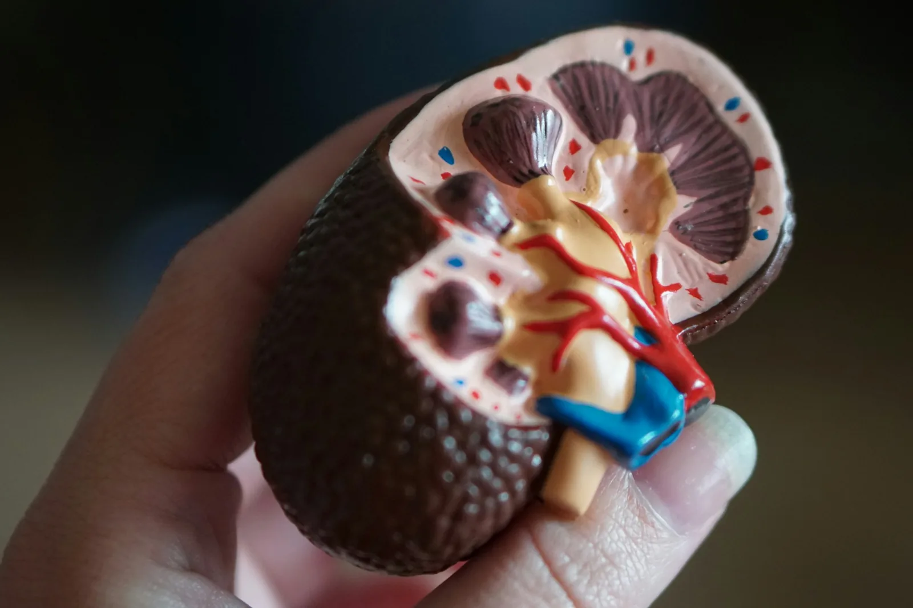

Kidney health
The five stages of kidney disease, explained
What your eGFR number means, what changes at each stage and the questions worth asking your nephrologist.

If you have been told you have chronic kidney disease (CKD), you will probably hear the word stage a lot. The stage describes how well your kidneys are filtering your blood. It helps your care team decide what to check, which medicines to adjust and when to start planning for treatment. It is a guide, not a verdict: many people stay at the same stage for years.
How kidney function is measured
Two simple tests do most of the work. A blood test measures creatinine, a waste product made by your muscles, and a formula turns it into your eGFR (estimated glomerular filtration rate), given in mL/min/1.73m². Think of it as a rough percentage of normal kidney function. A urine test, the ACR (albumin to creatinine ratio), shows whether protein is leaking through the filters. Protein in the urine is an early sign of damage, even when the eGFR still looks good.
| Stage | eGFR | What it means |
|---|---|---|
| 1 | 90 or more | Normal filtering, but signs of damage such as protein in the urine |
| 2 | 60 to 89 | Mildly reduced function with signs of damage |
| 3a / 3b | 45 to 59 / 30 to 44 | Moderately reduced function; most people still feel well |
| 4 | 15 to 29 | Severely reduced function; time to plan treatment |
| 5 | Below 15 | Kidney failure; dialysis, transplant or conservative care |
Stages 1 and 2: protect what you have
Early CKD rarely causes symptoms, so it is usually found during checks for diabetes or high blood pressure. This is the best time to slow things down. Keep blood pressure below the target your doctor sets (often 130/80), keep diabetes well controlled, stop smoking and stay active. Avoid painkillers such as ibuprofen and diclofenac unless a doctor has approved them, because they can harm the kidneys.
Stage 3: the time to understand and plan
At stage 3 your kidneys start to struggle with some jobs. You may be checked for anaemia (low haemoglobin), for changes in calcium and phosphate that affect your bones, and for acid levels in the blood. A renal dietitian can help with salt and, if needed, potassium. Some people are started on medicines that protect the kidneys, such as ACE inhibitors or SGLT2 inhibitors.
Stage 4: preparing for treatment choices
Stage 4 is when good planning makes the biggest difference. We will talk you through every option: in-centre haemodialysis, home haemodialysis, peritoneal dialysis, a kidney transplant and conservative care without dialysis. If haemodialysis is likely, a fistula is usually made in the arm months before it is needed, so it has time to mature. Transplant work-up, including testing family donors, can start now too.
Starting dialysis is decided by how you feel and by your results together, not by one eGFR number.
Stage 5: kidney failure
At stage 5 the kidneys can no longer keep the body in balance on their own. Common signs are deep tiredness, itching, poor appetite or nausea, swollen ankles, breathlessness and trouble sleeping. Your nephrologist will look at these symptoms alongside your blood tests to agree the right time to start treatment. Many people feel noticeably better within a few weeks of starting dialysis.
Questions to ask at your next appointment
- What is my eGFR and ACR today, and how have they changed over the last year?
- What blood pressure and blood sugar targets should I aim for?
- Are any of my current medicines hard on my kidneys?
- When should we start talking about dialysis, transplant or conservative care?
This article is general information and does not replace advice from your own kidney team.